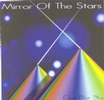

| Artist: | Clear Blue Sky |
| Title: | Mirror Of The Stars |
| Label: | Aftermath AFT 1010 |
| Length(s): | 65 minutes |
| Year(s) of release: | 2001 |
| Month of review: | [06/2001] |
| 2) | The Passage Of Time | 3.57 |
| 3) | Vexdre | 6.02 |
| 5) | Fly | 3.27 |
| 6) | Marari (for Your Love) | 6.22 |
| 8) | Say | 5.39 |
| 9) | Stargaze 777 | 6.30 |
| 10) | The Eye Of The Cosmos | 6.02 |
| 11) | Timelords Speak | 6.30 |
| 12) | Into The Night | 5.13 |
The Passage Of Time is rhythmically a stubborn one, with lots of variation in that department. The music continues to be guitar dominated and generally spacey. The middle part is more relaxed this time, with keyboards, soft vocals, and a vibrating guitar sound.
High-energy space rock, in mid-tempo, we find on Vexdre with somewhat sinister vocals. Although the vocal melody is a not very intertesting, the song has a good drive. The drive continues to be present in Hello Earth, but this time the guitar is an acoustic one. The rhythm section is good at work here. After a Spanish guitar interlude we
Fly continues the line of the album and as a consequence a sameness is creeping in. There is little subtle about the music here: space rock tracks with at times some rhythmic variation. The vocal parts simply go with the flow of the music. This holds for Marari (For Your Love) as well, notwithstanding the vagueish ending.
Lucidra, City Of Light opens cosmically with soft spoken guitars and cosmic keyboards. After the rock of the previous tracks, a good way to relax a little. The guitar playing is strongly bluesy, but has an ethereal character. On Say we also find the rock absent, but the song does not manage top evoke a spark. It is a bit too uneventful and the drumming sounds lame. The meandering guitar solo does not help.
Either the songs are getting weaker on this album, or I simply have had enough of it. Stargaze 777 and The Eye Of The Cosmos do not strike a bell, although the latter tries to involve some atmospherics in the music.
After the ethereal Timelords Speak we come to the trite rocker Into The Night. This is really quite bad.